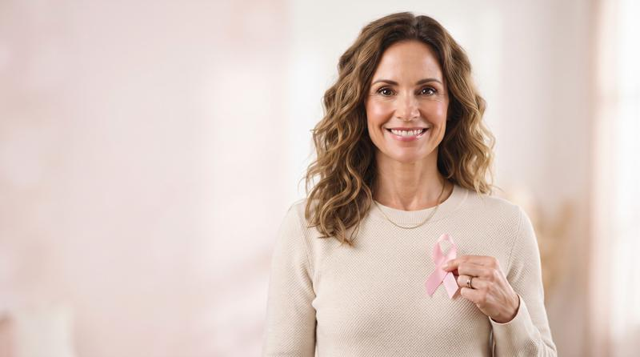
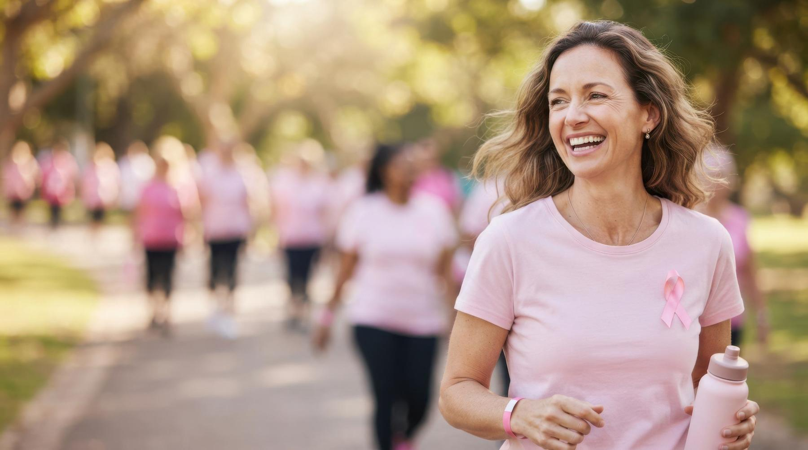
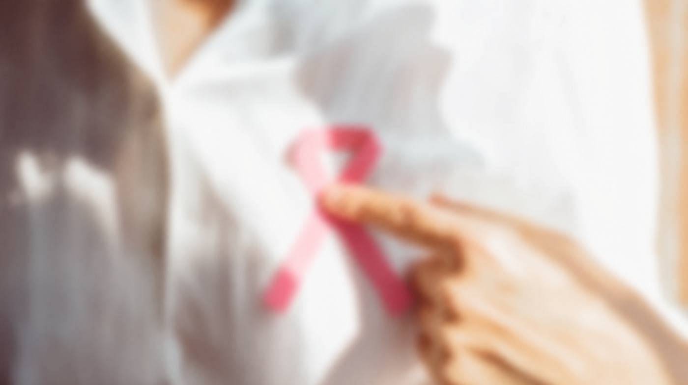
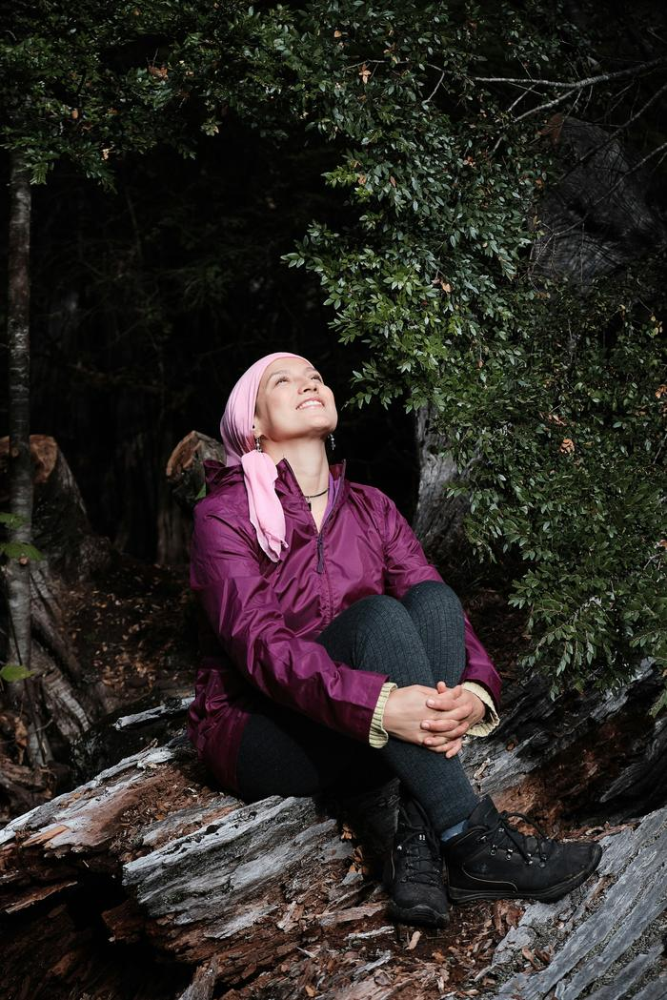
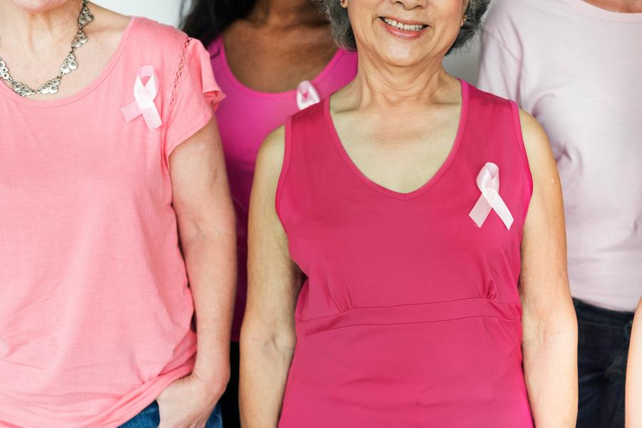
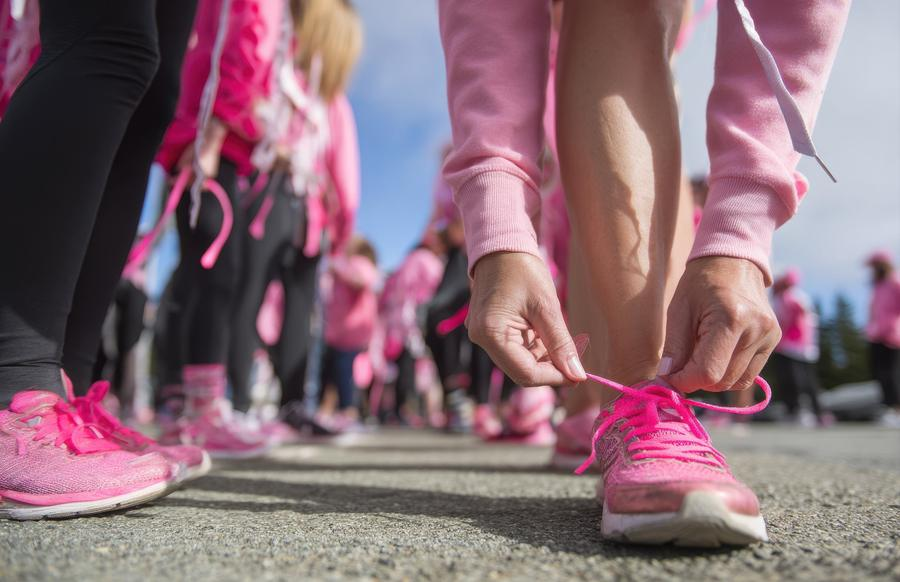
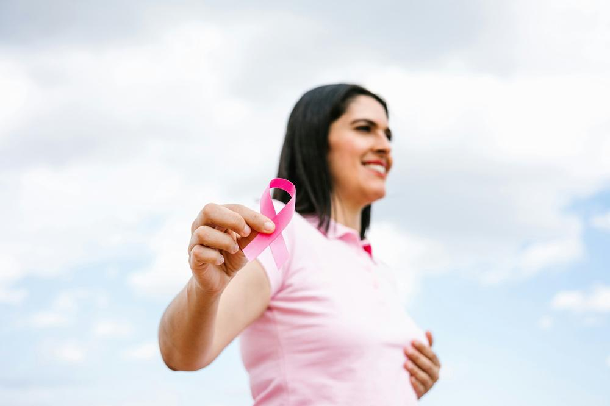

Early screeningBreast exams and mammograms for women who would otherwise go without.

A breast cancer awareness and women's health campaign to promote early detection and empower women through education, support and community.
Donate nowBeneficiary: [Beneficiary foundation]
will develop breast cancer in their lifetime
United States figure. Source: American Cancer Society.
United States
Source: American Cancer Society. "Up to 10%" hereditary, per ACS.
Know the facts
Source: World Health Organization.

One dollar donated. One unicoin received.
Unicoin Foundation has allocated a fund of [250,000] unicoins to reward donors who support this initiative. For every dollar donated, you will receive one unicoin*.
While supplies last.*Unicoin is the token of TransparentBusiness, a U.S.-registered company.
Where your donation goes
Four ways your donation reaches women this October.

Early screeningBreast exams and mammograms for women who would otherwise go without.

Access to treatmentHelp with diagnosis, treatment costs and transport so a diagnosis turns into care.

Patient and family supportEmotional support, support groups and practical help for patients and their families.

Awareness and educationCommunity workshops that teach women the signs and when to ask for a check-up.
Rise in Pink shows how blockchain can do more than move capital: it can fund early detection, connect communities and give women more time. This is Crypto4Good: technology in service of humanity.

#RiseInPink
Beyond donating
One post can be the reminder a friend, a mother or a sister needed. Join creators, community leaders and advocates who are using their platforms to promote early detection and raise funds this October.
Join the campaignFAQ
Rise in Pink is Unicoin Foundation's campaign for Breast Cancer Awareness Month. It raises funds for screening, treatment access and support for women with breast cancer, and rewards donors with unicoins.
The campaign is led by Unicoin Foundation in partnership with [Beneficiary foundation], which receives the donations.
Donations are received by [Beneficiary foundation] and go to the four areas listed above: early screening, access to treatment, patient and family support, and awareness.
[Same process as Rise Venezuela.]
For every dollar you donate, Unicoin Foundation gives you one unicoin from the campaign fund, while supplies last.
[Same legal answer as Rise Venezuela.]
Unicoin Foundation has allocated [250,000] unicoins. The reward ends when the fund runs out.
Breast exams and mammograms, help with treatment and transport costs, emotional support for patients and families, and community education on early signs.
Share the campaign with #RiseInPink, remind the women around you to get checked, and join as a creator, community leader or ambassador.

Thank you for standing with women facing breast cancer.
Donate now